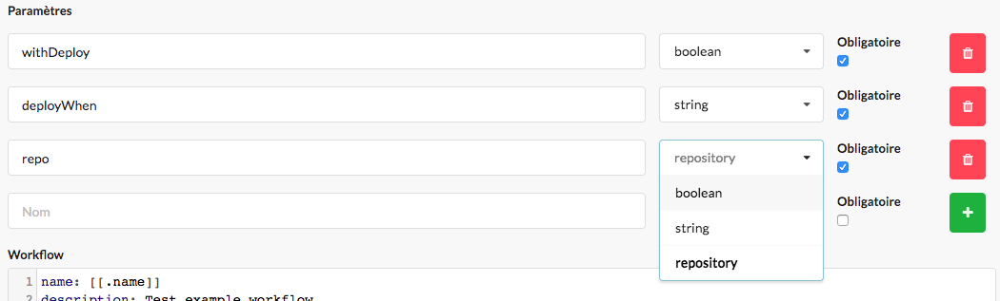
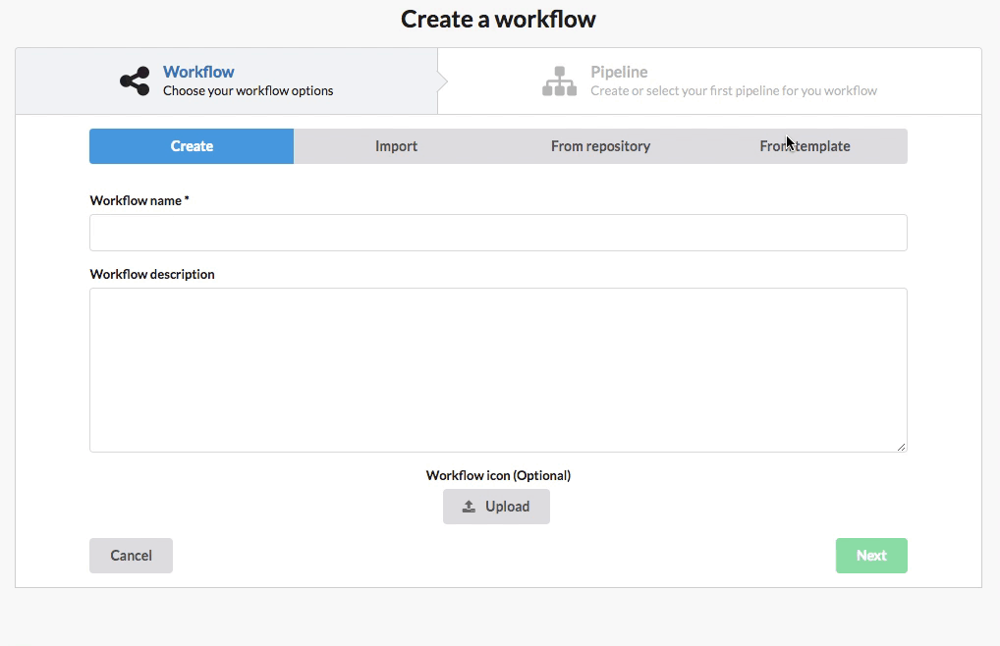

Workflow Template
What is a workflow template?
A workflow template is useful to easily create a new workflow for a project. Also if you need to manage multiple workflows, you can use a template to create one unique and generic workflow then apply it on each workflow.
Templates are versioned, so you can easily improve your template then re-apply it on a workflow.
A template contains a workflow, pipelines, applications, environments in yaml format. Each yaml file of a template is evaluated as a Golang template (with [[ and ]] delimiters) so loop or condition can be used in templates.
Template parameters
There are four types of custom parameters available in a template (string, boolean, repository, json). 
There are some other parameters that are automatically added by CDS:
- name: the name of the generated workflow given when template is applied (could be used to set the workflow name but also application names for example).
- id: the id of the template instance, this is unique for each generated workflow and reused when a template is re-applied (you can append this value to pipeline names to prevent override of existing pipeline).
Apply a template
To generate a new workflow from a template you should use the cdsctl. Then use the same command to update a generated workflow:
cdsctl template apply
You can also create a workflow from a template with the web UI. 
Bulk apply a template
To generate or update multiple workflows from a same template in one time you can use the bulk feature. This works both in cdsctl and cds ui:
cdsctl template bulk
You can also use a file to list all test instances that you want to generate and the values for all the required parameters.
template_path: shared.infra/example-simple
instances:
- workflow_path: DEMO/demo1
parameters:
- withDeploy=true
- deployWhen=success
- workflow_path: DEMO/demo2
parameters:
- withDeploy=false
- data=["one", "two"]
cdsctl template bulk -f instances.yml

Import/Create/Export
With cdsctl you can import/export a template from/to yaml files, you can also create a template in the UI from the settings menu:
cdsctl template push ./my-template/*.yml #from local files
cdsctl template push https://raw.githubusercontent.com/ovh/cds/master/tests/fixtures/template/simple/example-simple.yml #from remote files
cdsctl template pull shared.infra/my-template --output-dir ./my-template
Delete/Change template group
When removing a template, all info about the template and its instances are removed but all generated stuff will not be deleted. With the CDS UI you can change the template name or group, this will not affect template instances or generated workflow but no group members will be able to re-apply the template anymore.
Template and workflow ascode
You can both use a template and a workflow ascode. When using a template your repository will only contains one yaml file with the name of the template that you want to use and the values for all the required template parameters. You can create this file manually or directly with the CDS command line.
name: demo
from: shared.infra/example-with-repository@1
parameters:
deployWhen: manual
repo: gitlab/richardlt/demo
ssh_key_name: proj-ssh-key
withDeploy: "true"
You can ask for a specific revision of the template or remove the version number to always get the its latest version. This means that you can use different template versions for different branches of your repository. Also you can change the template reference to use another template on a specific branch.